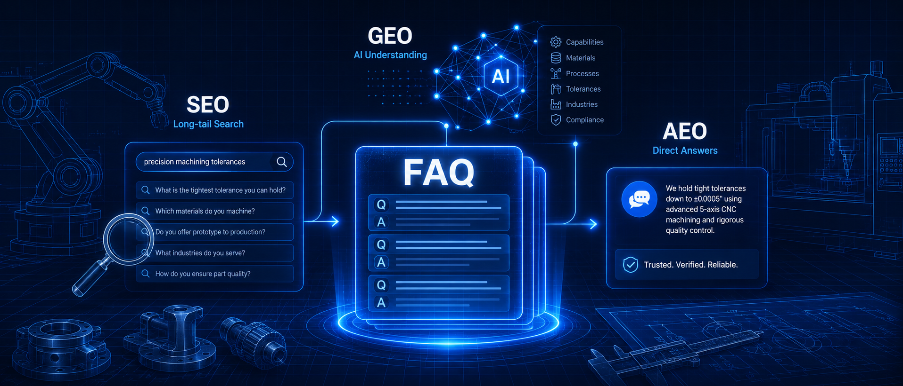
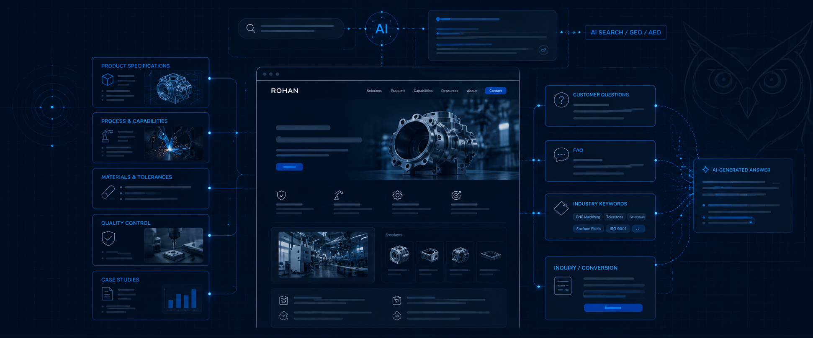
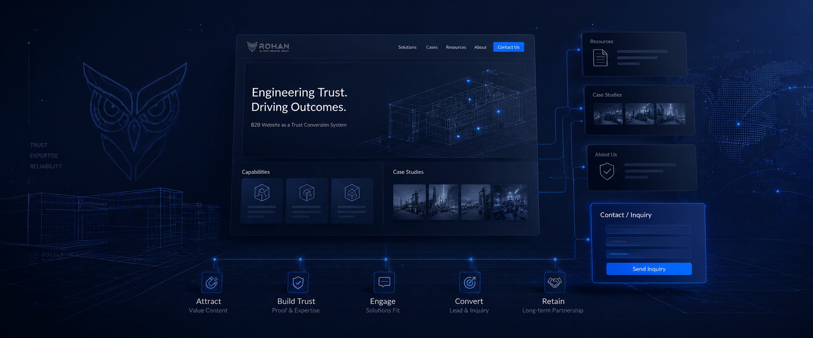

SEO & Search Visibility
为什么 FAQ 页面正在变得比你想象中更重要？
How well-written FAQs help manufacturing websites answer buyer questions, clarify technical details, and support search visibility.
READ ARTICLEOriginal guides, field notes, and research on manufacturing SEO, industrial websites, AI workflows, and the systems behind sustainable digital visibility.
面向制造业与外贸团队的实用指南、原创研究和工作流实践。把真实的行业知识转化为可搜索、可理解、可持续积累的数字资产。
A practical framework for turning manufacturing capabilities, processes, product knowledge, and proof of quality into pages that help the right buyers find and evaluate your business.
READ THE GUIDE
Browse practical research by the business problem you want to solve. 按照实际业务问题寻找相关指南与研究。
Keyword research, technical SEO, GEO, indexing, and structured content.
EXPLORE TOPICB2B website structure, capability pages, user experience, and conversion.
EXPLORE TOPICLinkedIn, content strategy, social proof, and content repurposing.
EXPLORE TOPICPractical AI applications, export communication, and document workflows.
EXPLORE TOPICBrand assets, export strategy, digital foundations, and low-cost validation.
EXPLORE TOPICPractical guides, tutorials, and original insights for industrial B2B growth.
14 articles
Search supports English and Chinese keywords

How well-written FAQs help manufacturing websites answer buyer questions, clarify technical details, and support search visibility.
READ ARTICLEWhy small validation projects can reduce risk before scaling digital investment, content, and export marketing.
READ ARTICLEWhy manufacturing translation needs terminology control, engineering context, and a human-reviewed AI workflow.
READ ARTICLEWhere AI can help manufacturing teams reduce repetitive work without replacing real industry expertise.
READ ARTICLEHow factories can turn equipment lists, certificates, and product photos into clear capability and trust narratives.
READ ARTICLE
How export-focused manufacturing websites can structure product, process, FAQ, and technical content for AI search.
READ ARTICLEPractical ways to apply AI to export outreach, customer replies, technical explanations, and follow-ups.
READ ARTICLE
Why a B2B manufacturing website should help buyers understand capability, verify credibility, and take the next step.
READ ARTICLEHow to turn equipment visuals into meaningful capability, process, project experience, and customer value information.
READ ARTICLEHow websites build a durable trust foundation while social media creates reach and ongoing customer touchpoints.
READ ARTICLEA practical distinction between search visibility, AI understanding, and answer-ready content for manufacturers.
READ ARTICLEHow one workshop photo can support several distinct B2B content angles, from equipment capability to quality control.
READ ARTICLEA framework for using social content to explain processes, quality control, project experience, and capability boundaries.
READ ARTICLEWhy product photos alone rarely communicate the proof and context B2B buyers need to make an inquiry.
READ ARTICLENo matching articles found.
Try another keyword or select a different topic.
Explore RGS solutions or share your website and materials for a practical review.